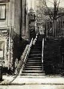
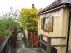
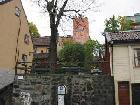
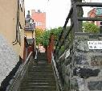
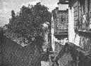
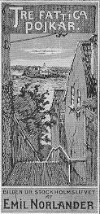

Södermalm i tid och rum
17. Sista Styverns TrapporSista styverns trappor som nu går från Fjällgatan upp till Stigbergsgatan hette tidigare Mikaelsgränd eller Mikaels Trappgränd. Sitt nuvarande namn fick den 1967. Orsaken till namnbytet var den spridda men osäkra uppfattningen att det var 1600-talsbödeln Mäster Mikael som gett upphov till namnet. En annan orsak till namnbytet var att man ville återupp-liva ett färgstarkt södernamn. Sista styverns trappor var namnet på en av de trappor, som från Stadsgården ledde upp till Fjällgatan. Trapporna har framför allt blivit kända genom August Blanches skildring av striden mellan »klarister« och »katrinister« i romanen Flickan i Stadsgården. Blanche skriver bl.a. att trapporna »belägna alldeles vid slutet av Stadsgården, äro af trä samt mycket smala och ännu mer branta. På dem kommer man från Stadsgården upp till ryggen af det berg, hvarpå Södermalm, den till omfånget betydligaste delen av Stockholm, hvilar.«

1923
Namnet Sista Styvern hör till krogen med samma namn som låg nere i Stadsgården. Här tog sjömännen den sista färdsupen innan de seglade ut och här kanske också hamnsjåarna slängde upp sina sista ören för en färdknäpp innan den mödosamma klättringen uppför trapporna begynte. De ursprungliga Sista styverns trappor revs 1899.




Man har ibland talat för att öppna fler av de många små gårdarna och täpporna på Stigberget för allmänheten, Anna Lindhagen gjorde det. Naturligtvis vore det trevligt om fler fick vandrai dem och glädja sig åt dem. Men samtidigt är det riskabelt att skapa många små gömda"prång", det tycks inte som om samhället vore moget för en sådan frihet. Nu vårdas täpporna bakomplanken av husens invånare och grönskan väller upp och ger ändå en bild som blir till glädje också för de tillfälliga besökarna. Medan "de hängandeträdgårdarna" tyvärr alltför ofta blir "tillhåll" som hyggliga besökare oroligt skyndar förbi.
Om hur man levde i trädgårdarna intill trapporna berättar en tidningsartikel från 1907:
"Här ha barnen den bästa lekplats, här dricker man sitt kaffe i lusthus och bersåer, här en poetisk litenvrå där man läser i lugn sina läxor eller en rolig bok. Ja, när man kommer från stenöknen därnere blir man riktigt avundsjuk."
|

|
  Omslag till Emil Norlanders "Tre fattiga pojkar". (C.Schubert,1910) Omslag till Emil Norlanders "Tre fattiga pojkar". (C.Schubert,1910)
|
Det är i denna (nu försvunna) del av trapporna som August Blanches tappra "klarinister" utkämpar sin väldiga strid med de fruktade"råttorna" från Katarina.
"Sista styverns trappor, belägna alldeles vid slutet av Stadsgården, äro av trä samt mycket smala och ännu mera branta. På dem kommerman från Stadsgården upp till ryggen av det berg, varpå Södermalm, den till omfånget betydligaste delen av Stockholm, vilar. Dessa trappor, som sålunda slingra sig utefter den branta bergväggen, äroonekligenden mest farliga plats man kan välja för lekar av det slag som det ifrågavarande; ty om också den styrka, vilken innehar och behärskar dem, utan svårighet kan försvara sig mot de fiender, somanfalla nerifrån, så äventyrar den på samma gång, för den händelse anfallet kommer ovanifrån, att med lika lätthet bliva kastad utför trapporna rakt i gapet på fienden därnere, i fall man dessförinnan icke brutit halsen av sig.Pauli, detta generalsämne, hade noga uppfattat dessa båda omständigheter och på dem byggt sin stora strategiska plan" (August Blanche: "Flickan i Stadsgården", 1847) |
|
{kind=link}